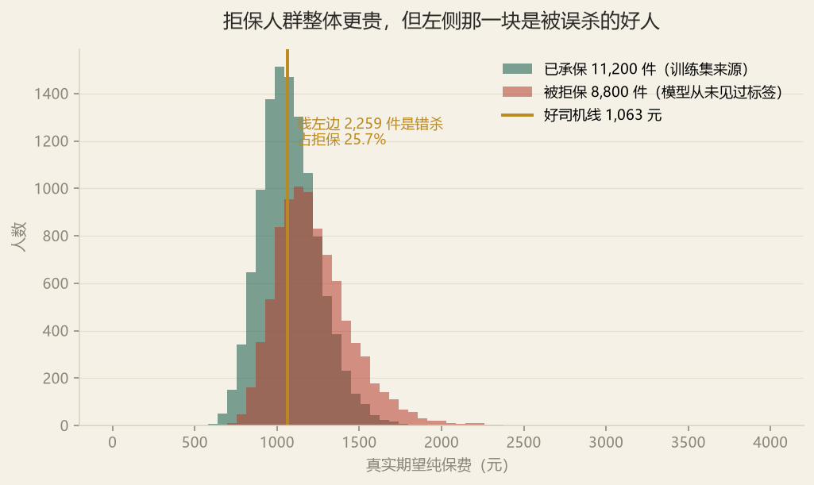

标签不可见：−1 不是 0
整个案例最值钱的一个字符，是一个负号。被拒保的人，出险次数记作 −1—— 意思是「没有记录」，而不是「零出险」。看懂这一行，你就看懂了保险行业里机器学习 最特殊的一道坎。
被拒保的人没有出险记录。这个事实看着简单，但它决定了整个案例的难度。
阴影下的 8,800 人
先看清我们手里有什么：
| 人群 | 人数 | 出险记录 | 机器能学到什么 |
|---|---|---|---|
| 已承保 | 11,200 | 有：真实出险次数与金额 | 一切照旧——这就是训练集 |
| 被拒保 | 8,800 | 没有：数据库里记作 −1 / 空值 | 什么也学不到——但模型偏要给他们打分 |
问题来了：模型是靠「出险记录」学会估价的。可被拒保的人恰恰因为被拒了所以没有记录。 这就好比你让一个只见过白天行人的交警，去给夜路定规矩。
如果把 −1 当成 0 喂给模型，等于告诉它：「这 8,800 个人都没出过险，都是天使。」 模型会立刻学出「拒保人群零风险」——然后建议你把他们的保费降到底。 这不是 hypothetical（假设），这是数据清洗里真实发生过的错误，而且极难被发现： 因为输出看起来「很合理」——数字都挺小、没有报错、报表美观。
把「好司机」变成一个机器能算的东西
业务上你说「找出被错杀的好司机」。机器听不懂「错杀」和「好」。 翻译工作分三步，每一步都是一次立场声明：
「真实」从哪来？
承保客户有真实赔款，可以直接算；被拒保客户的真实赔款只有模拟器知道
（本库专门造了这份「上帝视角」字段 _true_premium）。
现实业务里你拿不到它——所以后面第 07、08 页专门讲「拿不到的时候怎么办」。
「错杀」于是有了精确定义
真实期望纯保费 ≤ 1,063 元、却被规则拒掉的人。 按这个定义，8,800 件拒保件里藏着 2,259 件错杀 ——占拒保件的 25.7%，占全部申请的 11.3%。

一个意外友好的发现
拒保人群真实纯保费的十分位数：P10 = 965 元，P50 = 1,188 元， P90 = 1,525 元。承保人群的中位数（1,063 元） 落在 P10 和 P50 之间——这意味着被拒的人群里，至少有一成的人比现有客户的一半还要好。 「有梯度、有重叠」是整个案例能成立的前提。如果拒保的人清一色是坏风险， 那规则就没有偏见、模型也没有用武之地——那种数据也值得警惕：它可能是被「修」出来的。
机器学习的第一课不是算法，是老实：模型只能学「看得见的标签」； 看不见的那群人，才是你要用全部智慧去对待的。
凡是「模型要给没经历过结果的人群打分」的项目——拒保件复核、新渠道客群、新地区拓客—— 都自带这一页的问题。立项书里如果没人回答「标签从哪来」，这个项目八成会在半年后 无声无息地死掉，而且死前一直在出「看起来很美」的报表。
本库全部结论由
ai-kb/code 中的模拟数据与手写模型产生，数字统一来自 out/facts.json（三个动画的数字来自 out/anim_facts.json，由 node code/_animfacts.js 复算），可一键复现。看不懂的词见 术语表 · 想看源代码代码入口 · 读完还是飘？看 一页讲清楚 · 关于这个库 · 关于西红精算 · 知识星球：用数据看保险的精算师们